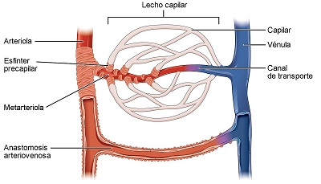

<html>
<head>
<title>MECANICA DE FLUIDOS, F025, fisica online, ejercicios resueltos</title>
<meta http-equiv="Content-Type" content="text/html; charset=UTF-8" />
<meta name="keywords" content="problemas resueltos, ejercicios resueltos, cbc, fisica, biofisica, fluidos, liquidos, gases, bernoulli, poiseuille, viscosidad, ideales, viscosos, humedad, difusion, osmosis, nomesalen, no me salen, ricardo cabrera" />
<meta name="description" content="Ejercicios y problemas resueltos, y apuntes teóricos de Fluidos, mecanismos de transporte de fluidos" />
<link rel="stylesheet" href="win_ie.css">
<style type="text/css">
<!--
.style1 {
	color: #3F6386;
	font-weight: bold;
}
.Estilo3 {color: #3F6386}
.Estilo16 {font-size: 16px}
.Estilo17 {font-size: 10px}
.Estilo18 {color: #FF0000}
-->
</style>
</head>

<body bgcolor="#FFFFFF" text="#000000" alink="#000000" leftmargin="0" topmargin="0" marginwidth="0" marginheight="0">
<table align=center width="600" border="0" cellspacing="0" cellpadding="0"> 
  <tr bgcolor="#000000" align="right"> 
<td></td></tr> <tr bgcolor="#BB0000" valign="middle" align="left"> 
<td class="bodytext" height="20"><TABLE WIDTH="100%" BORDER="0" CELLSPACING="0" CELLPADDING="0">
  <TR ALIGN="center" CLASS="menuitem">
    <TD WIDTH="43" height="19" CLASS="menuitem"><A HREF="../../index.html" CLASS="menuitem">&nbsp;<B>home</B>&nbsp;</A></TD>
    <TD WIDTH="5" CLASS="menuitem"><FONT COLOR="#000000">|</FONT></TD>
    <TD width="119" CLASS="menuitem"><strong><a href="index_hdinam.html" class="menuitem">más de hidrodinámica </a> </strong></TD>
    <TD width="9" CLASS="menuitem"><FONT COLOR="#000000">|</FONT></TD>
    <TD width="127" CLASS="menuitem"><strong><a href="../../intro_NMS.html" class="menuitem">otros temas de F&iacute;sica</a></strong></TD>
    <TD width="10" CLASS="menuitem"><FONT COLOR="#000000">|</FONT></TD>
    <TD width="160" CLASS="menuitem"><strong><a href="../../lista_ciruela.html" class="menuitem">lecciones del maestro Ciruela </a></strong></TD>
    <TD width="8" CLASS="menuitem"><FONT COLOR="#000000">|</FONT></TD>
    <TD width="67" CLASS="menuitem"><strong><a href="../../lista_tonterias.html" class="menuitem">tonter&iacute;as</a></strong></TD>
    <TD WIDTH="7" CLASS="menuitem"><a href="../energia/index_energia.html" class="menuitem"></a><FONT COLOR="#000000">|</FONT></TD>
    <TD WIDTH="48" CLASS="menuitem">&nbsp;<B><FONT FACE="Arial, Helvetica, sans-serif"><A HREF="mailto: ricuti@gmail.com" CLASS="menuitem">@</A></FONT><A HREF="../../index.html" CLASS="menuitem"></A></B>&nbsp;</TD>
  </TR>
</TABLE></td></tr> <tr> <td class="bodytext" height="19"><p></td></tr> 
<tr align="center"> <td height="2731"> <table width="600" border="0" cellspacing="0" cellpadding="0"> 
<tr class="bodytext"> <td colspan="2" valign="top" height="1871"> <p></td>
<td valign="top" width="594" height="1871"> 
<table width="589" border="0" cellspacing="0" cellpadding="0"> <tr> 
  <td height="74" colspan="2" bgcolor="#D7FFFF" class="bodytext"><span class="bodytext"><strong><em><strong><em><strong><strong>&#160; &#160;</strong></strong></em></strong></em>NO ME SALEN<br />
</strong></span><span class="Estilo3"><em class="bodytext "><strong><em><strong><em><strong><strong>&#160; &#160;</strong></strong></em></strong></em>(<strong>PROBLEMAS RESUELTOS   DE BIOF&Iacute;SICA DEL CBC</strong>)</strong></em></span><br />
      <span class="titulograndegris Estilo16"><strong><em><strong><em><strong><strong>&#160; &#160;</strong></strong></em></strong></em>FLUIDOS<br />
      </strong></span><br /> </td>
  <td class="bodytext" rowspan="4" height="74" width="7">&nbsp;</td>
  <td class="bodytext" height="74" rowspan="4" valign="top" width="85"> 
<p></p></td></tr>
  <tr>
    <td height="18" colspan="2" bgcolor="#FFFFFF" class="bodytext">&nbsp;</td>
  </tr> 
<tr> <td width="150" height="434" valign="top" class="bodytext"><p></P>
    </td>
  <td width="357" valign="top" class="bodytext"><p><strong>47 - Sistema circulatorio sanguíneo<br>
    El sistema cardiovascular humano consta de dos bombas fusionadas en un solo corazón que  impulsan la sangre por un circuito cerrado compuesto de dos sistemas:  <br>
    SISTEMA GRANDE O PERIFÉRICO. El ventrículo del corazón izquierdo (VI) expulsa la sangre oxigenada por la arteria aorta y se reparte a todos los órganos y tejidos del cuerpo a través del sistema de  arterias mayores. En los lechos capilares de cada órgano la sangre intercambia nutrientes y desechos y  regresa por el sistema de retorno de venas mayores drenando en la aurícula del corazón derecho (AD).  <br>
    SISTEMA CHICO O PULMONAR. La sangre luego pasa de la aurícula derecha al ventrículo derecho  (VD) que la impulsa hasta los pulmones por la arteria pulmonar. En los lechos vasculares pulmonares se oxigena y retorna al corazón izquierdo por las venas pulmonares que drenan en la aurícula  izquierda (AI). De ahí pasa al ventrículo izquierdo completando el ciclo.  Se adjunta un esquema simplificado del circuito donde la parte resistiva corresponde a los lechos  vasculares: arteriolas, capilares y vénulas en los diferentes órganos. Las presiones manométricas son:<br>
    &nbsp;&nbsp;&nbsp;
    <em>p aorta = 94 mmHg <br>
&nbsp;&nbsp;&nbsp;
p vena cava = 3 mmHg  <br>
&nbsp;&nbsp;&nbsp;
p arteria pulmonar = 15 mmHg  <br>
&nbsp;&nbsp;&nbsp;
p venas pulmonares = 5 mmHg<br>
    <br />
    </em></strong></p>    </td>
</tr>
<tr>
  <td height="94" colspan="2" align="center" valign="middle" class="bodytext"></td>
  </tr>
<tr>
  <td height="433" colspan="2" class="bodytext"><p><strong>47.3- La demanda sanguínea de cada órgano  depende de la actividad de la persona. Durante  la actividad física intensa el caudal en los músculos esqueléticos puede multiplicarse por diez  respecto al reposo. El corazón no puede aumentar el caudal bombeado a más de cuatro veces,  de manera que cuando un tejido demanda más  flujo hay otras partes del cuerpo que lo disminuyen. Existe una redistribución del caudal de  acuerdo a las necesidades, siempre garantizando  la irrigación adecuada del encéfalo y el corazón.</strong></p>
    <p><strong>a) Si durante el ejercicio el caudal total aumenta un 200 % (se triplica) y la presión media en la  aorta aumenta un 40 %, manteniéndose prácticamente inalterada en la vena cava, ¿cómo se modifica el valor de la resistencia periférica  total? ¿Cómo se modifica la potencia del corazón?  </strong>Durante un gran esfuerzo prolongado todo cambia. Nuevamente usamos la ley de Ohm:</p>
    <blockquote>
      <p><strong><em>R<sub>esf</sub></em></strong> <strong>=</strong> <strong><em><strong><em>&#916;P</em></strong><sub>esf</sub></em></strong> <em><strong>/</strong></em> <strong><em>Q<sub>esf</sub></em></strong></p>
      <p><strong><em>R<sub>esf</sub></em></strong> <strong>=</strong> <strong><em><strong><em>1,4 . &#916;P</em></strong><sub>perif</sub></em></strong> <em><strong>/</strong></em> <strong><em>3 . Q<sub>normal</sub></em></strong></p>
      <p><strong><em>R<sub>esf</sub></em></strong> <strong>=</strong> <strong><em><strong><em>1,4 . </em></strong>91 <span class="epigrafe">mmHg</span></em></strong> <em><strong>/</strong></em> <strong><em>3 . <strong>5200 <span class="epigrafe">ml/60s</span></strong> </em></strong></p>
      <p><strong><em>R<sub>esf</sub></em></strong> <strong>=</strong> <em><strong>0,49 <span class="epigrafe">URP</span></strong></em></p>
      </blockquote>
    <p>La resistencia periférica total disminuye aproximadamente a la mitad.</p>
    <blockquote>
      <p><strong><em>Pot<sub>esf</sub></em></strong> <strong>= </strong><strong><em><strong><em>&#916;P</em></strong><sub>esf</sub></em></strong> <em><strong>.</strong></em> <strong><em>Q<sub>esf</sub></em></strong></p>
      <p><strong><em>Pot<sub>esf</sub></em></strong> <strong>= </strong><strong><em><strong><em>1,4 . &#916;P</em></strong><sub>perif</sub></em></strong>&nbsp; <em><strong>.</strong></em> <strong><em>3 . Q<sub>normal</sub></em></strong></p>
      <p><strong><em>Pot<sub>esf</sub></em></strong> <strong>= </strong><strong><em><strong><em>1,4 . </em></strong>91 <span class="epigrafe">mmHg</span></em></strong>&nbsp; <em><strong>.</strong></em> <strong><em>3 . <strong>86,7 <span class="epigrafe">ml/s</span></strong></em></strong> <strong>=</strong> <em><strong>33.130</strong></em><strong></strong> <strong><em><span class="epigrafe">mmHg</span></em></strong><strong><em>.<strong><span class="epigrafe">ml/s</span></strong></em></strong></p>
      <p><strong><em>Pot<sub>esf</sub></em></strong> <strong>=</strong> <em><strong>4,4 <span class="epigrafe">W</span></strong></em></p>
      </blockquote>
    <p>La potencia del corazón aumenta más de&nbsp;cuatro veces durante un esfuerzo prolongado.</p>
    <p><strong>b) En tres de los lechos capilares mencionados  en el problema 47.1 aumenta el flujo cuando el  individuo hace actividad física, ¿en cuáles?  </strong>Aumentarás aquellos necesarios para el esfuerzo prolongado: muscular y coronario. Esta actividad aumenta el metabolismo lo cual genera mucho calor, de modo tal que también se aumenta el flujo cutáneo que disipa ese calor.</p>
    <p><strong>c) Explique cómo se regula el flujo sanguíneo  hacia los tejidos mediante la vasodilatación y la  vasoconstricción.  </strong>Como te comenté antes, la llave maestra del sistema cardiovascular se encuentra en la arteriolas. Esos vasos están inervados por el <em>sistema nervioso central autónomo</em> que contrae o relaja la&nbsp;pared muscular de las arteriolas. Muchos lechos capilares (sobre todo los de la piel) poseen un bypass natural o anastomosis que gracias a la dilatación y/o constricción permiten que la sangre fluya hacia el lecho capilar (piel enrojecida) o retorne al corazón si pasar por el lecho (piel pálida). (Hay más información en el ítem <strong>e)</strong>).</p></td>
  <td width="7" class="bodytext">&nbsp;</td>
  <td width="85" align="center" valign="middle" class="epigrafe Estilo18">&nbsp;</td>
</tr>  

<tr>
  <td height="243" colspan="2" align="center" valign="middle" class="bodytext"></td>
  <td class="bodytext">&nbsp;</td>
  <td class="bodytext">&nbsp;</td>
</tr>
<tr>
  <td colspan="2" align="left" valign="middle" class="bodytext"><p><strong>d) Los ajustes necesarios para redirigir el flujo  sanguíneo se producen a nivel de las arteriolas.  Justifique, con las respuestas del problema 44,  que la regulación ocurra en ese tramo de la red  vascular. </strong>Leamos la respuesta de la guía: <em>En la circulación periférica la mayor caída  de presión ocurre en las arteriolas consecuencia  de su estrecho diámetro y el número de sus  ramas. Además, su pared vascular es extremadamente fuerte pudiendo variar su diámetro  hasta cuatro veces, modificando su resistencia  en más de 250 veces. Esto hace posible que las  arteriolas respondan a señales locales o de los  tejidos variando su diámetro y así controlando el  flujo sanguíneo.</em></p>
    <p><strong>e) ¿Por qué se enrojece el rostro cuando uno  hace gimnasia? </strong>Ya lo dije. Pero aprovechemos y leamos la respuesta de la guía: <em>El aumento de la actividad física implica un  mayor metabolismo tisular, con la consecuente  generación termogénica producto de los residuos de las rupturas de las cadenas de ATP y  ADP. Esto explica que, al hacer ejercicio, la temperatura del cuerpo y de la piel aumenta y el  organismo busca compensar este incremento. El  sistema dérmico periférico actúa como una especie de radiador poniendo en contacto los vasos  superficiales de la dermis con el ambiente. Para  incrementar este intercambio se abren los capilares cutáneos (vasodilatación local) permitiendo  la circulación de mayor cantidad de sangre la  cual regresa al interior con menor temperatura.  Es entonces la dilatación de esos vasos lo que  nos brinda esa tonalidad rojiza a la piel. Esto justifica que en la respuesta b) hayamos considerado que uno de los lechos vasculares en los cuales aumenta la irrigación por vasodilatación sea  el cutáneo</em>.</p>
    <p><strong>f) ¿Por qué se recomienda no nadar después  de comer?</strong> <em>Luego de una ingesta mas que moderada,  gran cantidad de sangre acude a la circulación  gastrointestinal para realizar la digestión de los  alimentos razón por la cual, si hacemos ejercicio,  como nadar, parte del caudal se redirigirá hacia  los tejidos musculares y cutáneos, pudiendo  interrumpir el proceso mencionado.</em></p></td>
  <td class="bodytext">&nbsp;</td>
  <td class="bodytext"><p></td>
</tr>
<tr>
  <td height="49" colspan="2" align="left" class="bodytext"><p>&nbsp;</p>
    <blockquote>&nbsp;    </blockquote>    </td>
  <td class="bodytext">&nbsp;</td>
  <td width="85" rowspan="3" valign="bottom" class="bodytext"><strong><em><sub><p></sub></em></strong></td>
</tr>

<tr>
  <td height="18" colspan="2" bgcolor="#FFFFFF" class="bodytext">&nbsp;</td>
  <td class="bodytext">&nbsp;</td>
  </tr>

<tr> <td height="64" colspan="2" align="center" valign="middle" bgcolor="#CCCCCC" class="bodytext"><table width="400" height="31" border="0" cellpadding="0" cellspacing="0">
  <tr>
    <td class="epigrafe">Algunos derechos reservados. 
  Se permite su reproducci&oacute;n citando la fuente. &Uacute;ltima actualizaci&oacute;n jul-22. Buenos Aires, Argentina. </td>
  </tr>
</table>  </td>
  <td class="bodytext" width="7">&nbsp;</td>
  </tr> 
<tr> <td height="18" colspan="2" class="bodytext">&nbsp;</td><td class="bodytext" width="7">&nbsp;</td>
<td class="bodytext" width="85">&nbsp;</td>
</tr> 
</table></td></tr> </table><p></td></tr> 
<tr> <td class="bodytext"><p></td></tr> 
</table>
</body>
</html>
